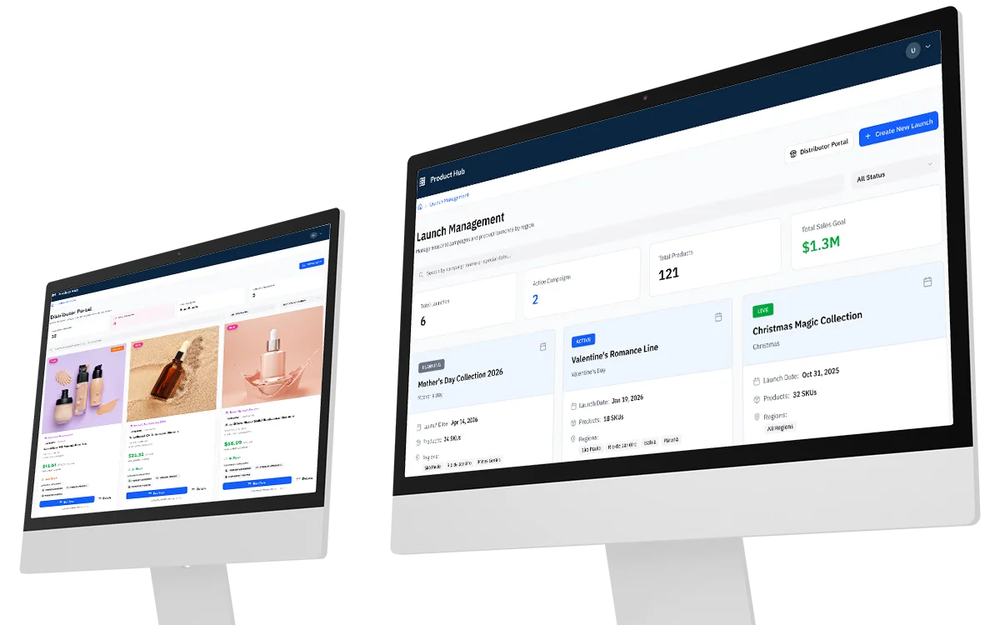
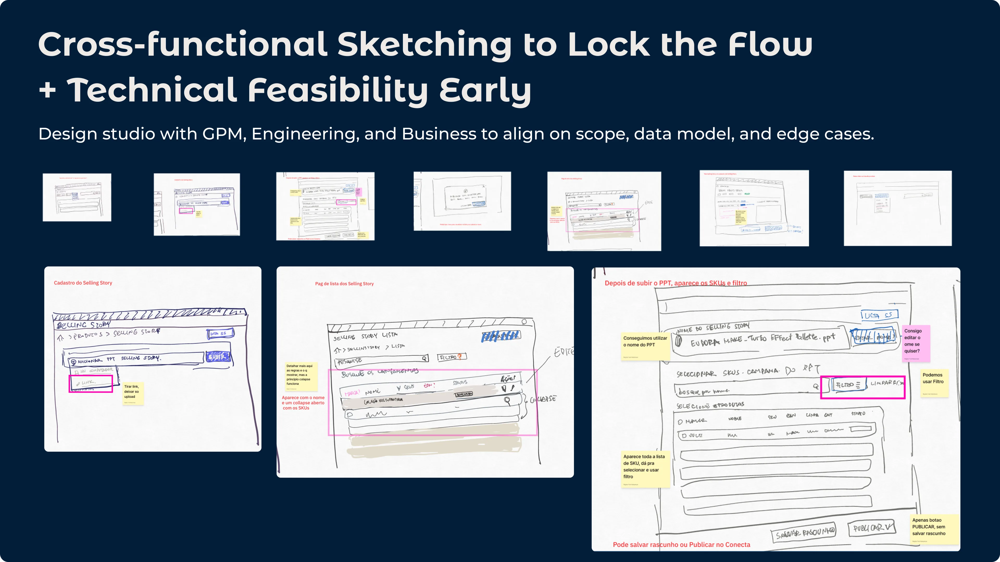
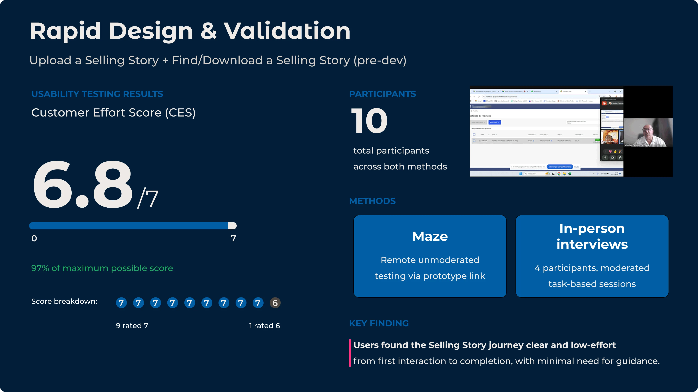
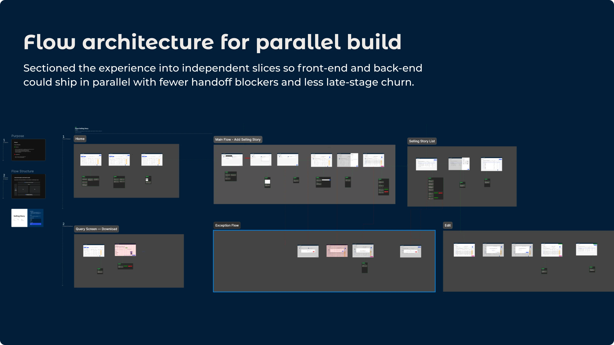
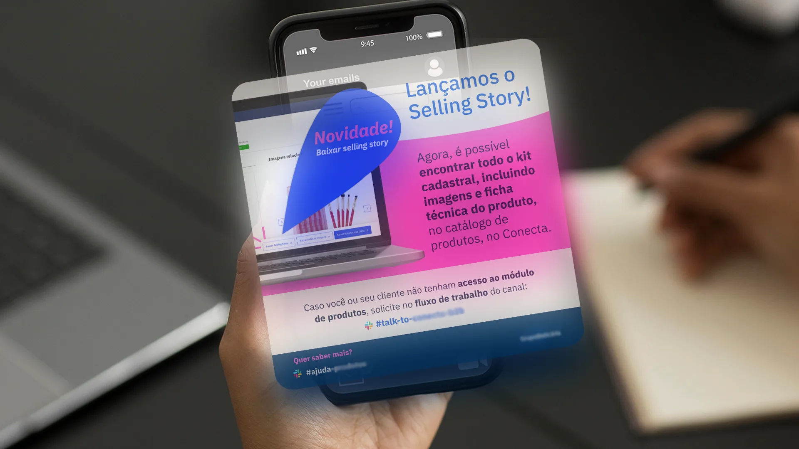
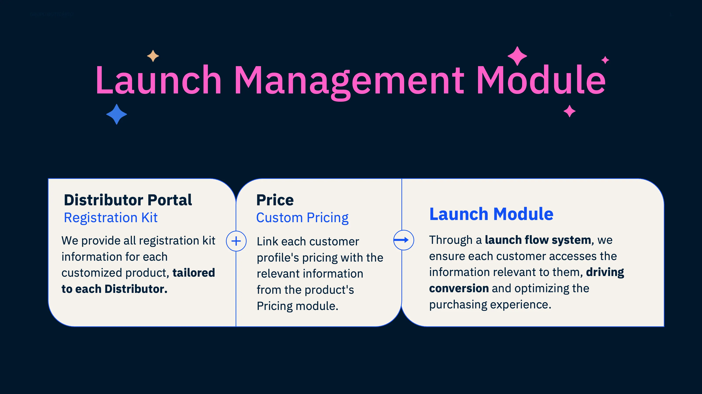

Designed the missing feature no team had built, shipped it ahead of schedule, and mapped the next opportunity before the cycle closed.
The brief I was handed: there wasn't one.
The brief I shipped: the missing feature, plus the next cycle's opportunity, scoped.
100%
OKR completion for launch cycle 4/24
2×
user growth in six months post-launch
20×
more catalog downloads in six months post-launch

Problem
Product Catalogue helps resellers find and promote products. One piece was missing: the Selling Story journey, without which resellers couldn't complete the Catalogue Registration Kit, blocking the entire OKR. There was no PM, and the flow had never been designed.
My Approach
I stepped into the space left by the missing PM. I aligned with the GPM and stakeholders on requirements and constraints before any screen, then took the logic to engineering (2 frontend developers, 1 backend developer, a tech lead) to stress-test feasibility. A new PM joined later and we shipped it together.

Sketching the flow with the team before touching Figma.
Design Decisions Under Constraint
The Q4 deadline was fixed, so I reused what engineering already knew. Product Catalogue already had tables and filters that worked, so I mapped Selling Story onto them and iterated closely with engineers. No new patterns to learn, less handoff friction, build on schedule.
Selling Story prototype walkthrough.
Usability Testing
I tested with 10 participants: remote unmoderated sessions via Maze and 4 moderated in-person interviews. CES came back at 6.8 out of 7, so the flow worked. The in-person sessions showed what Maze couldn't: users paused on the list page looking for context, who changed what and when. I added actor and timestamp to the list view before handoff.

Flow Architecture
I structured the flow so frontend and backend could build in parallel, which the Q4 deadline required. The flow file became the shared reference for the whole sprint, so no separate design review was needed at completion.

Complete Selling Story flow: the shared reference for frontend, backend, and tech lead.
Go-to-Market
I built launch communications for internal teams and external distributors. Adoption was part of the brief I set for myself, not just delivery.

Launch communication sent to internal teams and distributors on release day
What I saw coming
While building Selling Story, I ran parallel research: interviews, system mapping, direct client conversations. It became a product opportunity deck with quantified sizing, data references, and client testimonials. The finding: three areas had to connect for the OKR to be completable at scale (Product Catalogue Registration Kit, Personalised Pricing, a structured Launch Module). I sized it at ~30% GMV upside from new product launches and presented it to the GPM and execs as a next-cycle investment.

Summary slide from the opportunity deck.
Results & Impact
The OKR landed early, which gave the next cycle momentum.
Key Learnings
What I'd do differently
I didn't advocate for the work enough while it was in progress. I'd bring design leadership in earlier, not to present finished work but to build conviction, so the opportunity deck had a better chance of becoming the next brief.